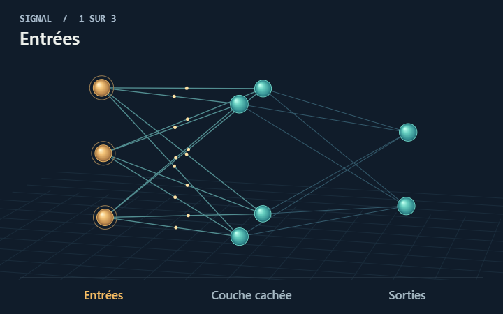
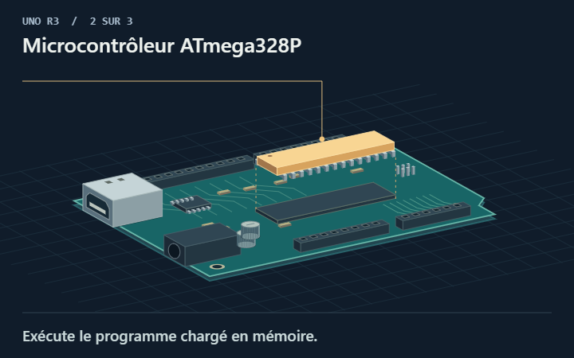

Un réseau de neurones en 3D
Suivez le signal des entrées jusqu’à la sortie, puis faites pivoter le réseau pour observer ses connexions.
Projets personnels
Je développe un tuteur qui dessine ses explications à l’écran et un moteur qui donne vie à des personnages articulés.
Tuteur visuel
Beehive aide les étudiants à comprendre un cours avec des schémas, des animations et des modèles 3D. Son tuteur IA peut annoter directement l’écran. Ces deux exemples illustrent cette façon d’expliquer.

Suivez le signal des entrées jusqu’à la sortie, puis faites pivoter le réseau pour observer ses connexions.

Repérez les composants d’une Uno R3 et voyez où chacun se situe sur la carte.
Moteur d’animation 3D
Je développe un pipeline où des agents IA s’appuient sur des consignes spécialisées, le modèle 3D local TRELLIS et des ressources Three.js. Ces études montrent comment un personnage en papier découpé interagit avec les objets d’une scène.